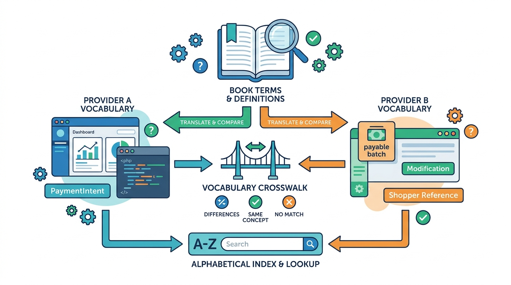

Reference
Glossary: Plain-Language Definitions and a Stripe–Adyen Crosswalk
AI-assisted: researched and written with Claude Code; illustrations generated with Gemini. How this works

Image generated by Google Gemini (gemini-3-pro-image-preview)